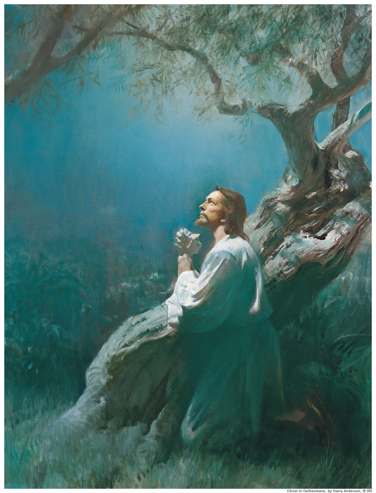

|  | |
| Prayer Requests | |
|
Prayer is one of the most powerful tools in the Christian arsenal. God has promised many times in Scripture that not one supplication to Him goes unheard [Jer. 29:12, Matt. 7:7-8, Mark 11:24, Phil. 4:6, James 5:16, 1 John 5:14-15]. If you would like to submit a prayer request for our many prayer warriors to take to God, please submit them here. If you would like to know how you can enlist as a prayer warrior, please join our mailing list by filling out this form, or contact us at shakingtimeministries@gmail.com. |